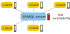
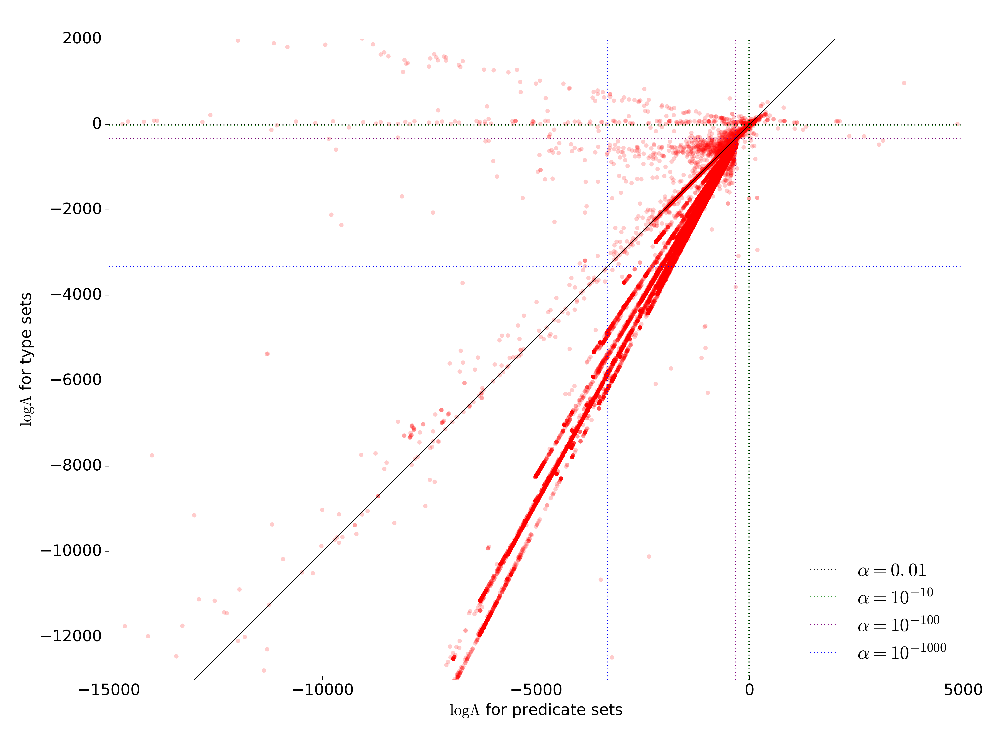
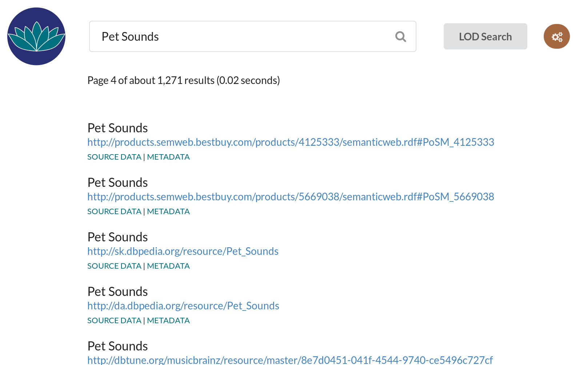
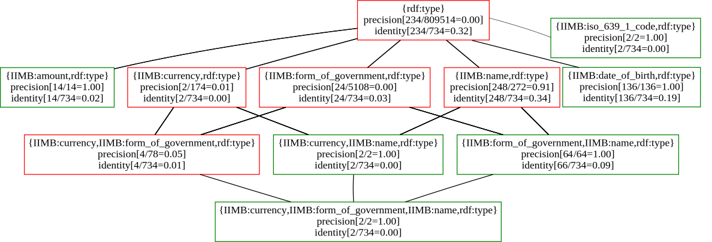

LOD Laundromat
for Data Quality
September 12th, 2016
Wouter Beek (w.g.j.beek@vu.nl)

Metcalfe's Law
The value of a network is proportional to the square of the number of connected nodes

So... how many connected nodes does the SW have?

Data growth is exponential
SW growth is linear
Part I
What is the problem?
After 15 years most data cannot be automatically:
- found
- read
- queried
- reasoned over
Many PhD students' worse nightmare…
Problem 1: Most data cannot be found
SotA findability comparable to 1995 Yahoo! index

Problem 2: Most data cannot be read
E.g., Freebase <10% syntactically correct.
Current approaches are inherently slow: standards, guidelines, best practices, tools, education.
This takes decades!
Why is data dirty?
- Character encoding issues
- Socket errors
- Protocol errors
- Corrupted archives
- Authentication problems
- Syntax errors
- Wrong metadata
- Lexical form ↛ value
- Non-canonical lexical form
- Logically inconsistent
- …
Problem 3: Most data cannot be queried

Problem 4: Most data cannot be reasoned over
- Web-scale reasoning is only performed in the lab
- Federation does not scale to thousands of endpoints
- Real-world reasoning immediately goes ex falso quodlibet
Part II
How to solve this?
lodlaundromat.org


Beek & Rietveld & Bazoobandi & Wielemaker & Schlobach “LOD laundromat: A Uniform Way of Publishing Other People’s Dirty Data” ISWC, 2014.
LOD Laundromat uses the ClioPatria triple store, written in SWI-Prolog
Wielemaker & Beek & Hildebrand & Van Ossenbruggen, ‘ClioPatria: A SWI-Prolog Infrastructure for the Semantic Web’ in Semantic Web Journal, 2016.How to query >30B statements (1/2)
How to query >30B statements (2/2)
 Rietveld & Verborgh & Beek & Vander Sande
& Schlobach, “Linked Data-as-a-Service: The Semantic
Web Redeployed” ESWC 2015.
Rietveld & Verborgh & Beek & Vander Sande
& Schlobach, “Linked Data-as-a-Service: The Semantic
Web Redeployed” ESWC 2015.
SW layer cake

Alt. SW layer cake
 Beek & Rietveld & Schlobach & Van
Harmelen “LOD Laundromat: Why the Semantic Web Needs
Centralization (Even If We Don't Like It)” IEEE
Internet Computing 20 (2) p.78-81, 2016.
Beek & Rietveld & Schlobach & Van
Harmelen “LOD Laundromat: Why the Semantic Web Needs
Centralization (Even If We Don't Like It)” IEEE
Internet Computing 20 (2) p.78-81, 2016.
Part III: Why bother?

How generalizable is SW research?

ISWC 2014 Research Track:
- 17 datasets overall; avg. 2 per per paper (avg. 2)
- Data was cleaned locally and deleted afterwards
Reproducing “Linked Data Best Practices” (Schmachtenberg 2014)
| Original | LOD Lab | ||||
|---|---|---|---|---|---|
| Prefix | #datasets | %datasets | Prefix | #documents | %documents |
| rdf | 996 | 98.22% | rdf | 639,575 | 98.40% |
| rdfs | 736 | 72.58% | time | 443,222 | 68.19% |
| foaf | 701 | 69.13% | cube | 155,460 | 23.92% |
| dcterm | 568 | 56.01% | sdmxdim | 154,940 | 23.84% |
| owl | 370 | 36.49% | worldbank | 147,362 | 22.67% |
L. Rietveld & W. Beek & S. Schlobach, “LOD Lab: Experiments at LOD Scale”, International Semantic Web Conference, 2015 (Best Paper Award).
Calculate a metric over all WoD documents:
frank documents --downloadUri |
./countNamespacesForDocument
Beek & Rietveld, ‘Frank: The LOD Cloud at your
Fingertips’ in ESWC Developers Workshop,
2015.
Large-scale Data Quality Improvement (1/2): Datatypes

Large-scale Data Quality Improvement (2/2): Language tags
 Beek & Ilievski & Debattista & Sclobach
& Wielemaker, ‘Literally Better: Analyzing and
Improving the Quality of Literals’ under submission.
Beek & Ilievski & Debattista & Sclobach
& Wielemaker, ‘Literally Better: Analyzing and
Improving the Quality of Literals’ under submission.
Evaluation results for ±600,000 datasets
 De Rooij & Beek & Bloem & Schlobach & Van Harmelen, ‘Are Names Meaningful? Quantifying Social Meaning on the Semantic Web’ in ISWC, 2016.{kind=link}
Semantic Search Engine
Ilievski & Beek & Van Erp & Rietveld & Schlobach, ‘LOTUS: Adaptive Text Search for Big Linked Data’, ESWC 2016.lodsearch.org
Part IV: Is semantic data quality
what we think it
is?
owl:sameAs has 2 meanings
Formal meaning
$$a = b \,\longleftrightarrow\, (\forall P)(Pa = Pb)$$
Social meaning

“Include links to other URIs, to discover more things.”
Contextual semantics for owl:sameAs

Beek & Schlobach & Van Harmelen, ‘A
Contextualised Semantics for owl:sameAs’
in International Semantic Web Conference,
p. 405--419, 2016.
Thank you!
Mail: w.g.j.beek@vu.nl
WWW: wouterbeek.com
Triply: triply.cc